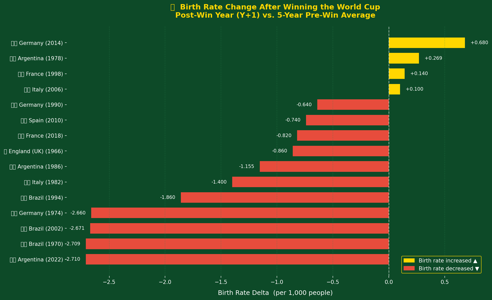
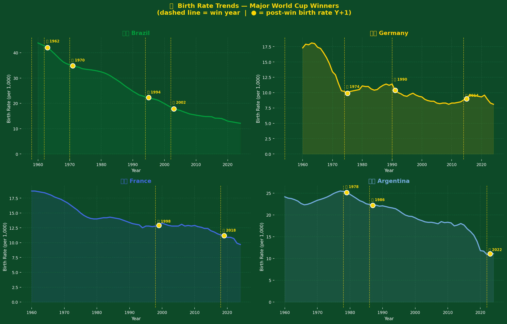
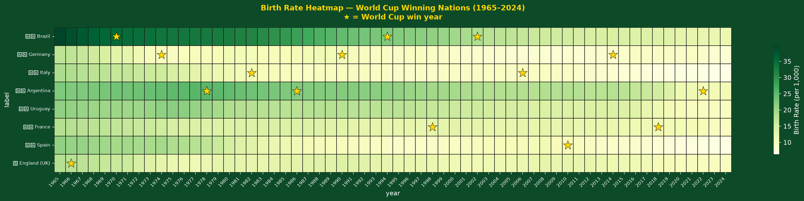
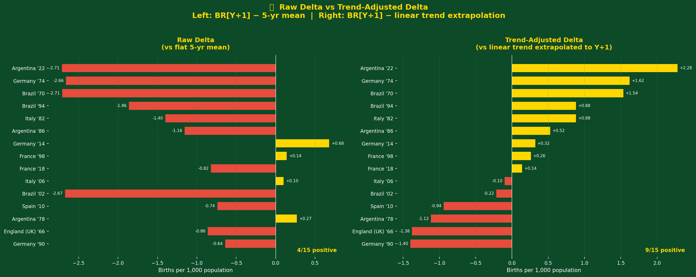
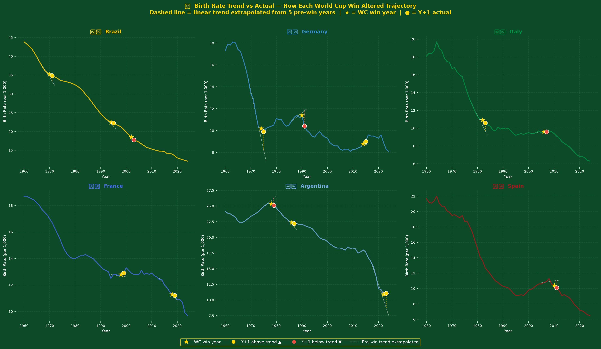
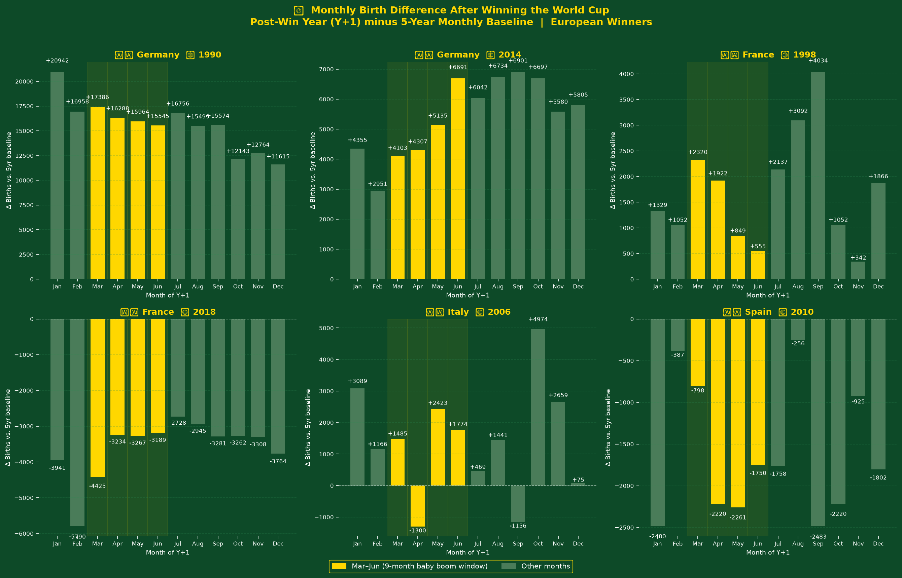
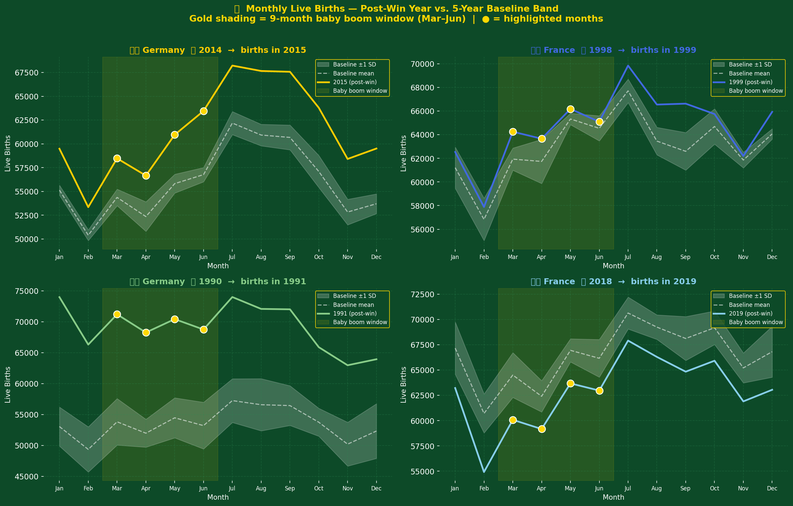
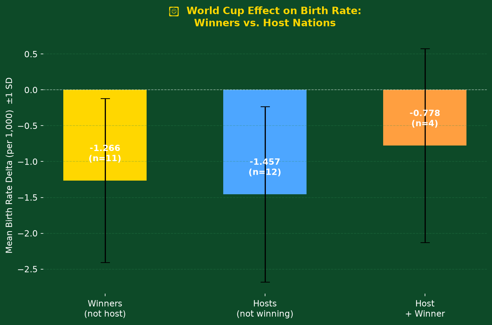
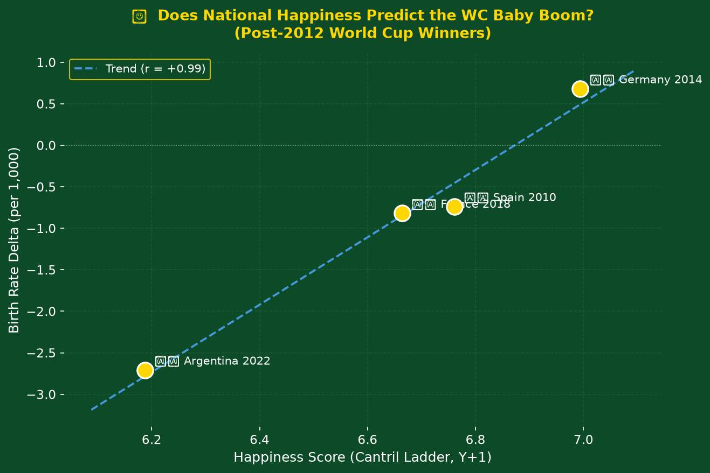

Does winning the FIFA World Cup trigger a measurable rise in birth rates 9 months later?
This report investigates whether countries that win the FIFA World Cup experience a measurable uptick in birth rates in the year that follows their victory — a so-called "World Cup Baby Boom." The hypothesis rests on a well-documented sociological mechanism: national euphoria following major sporting events is associated with elevated rates of social bonding and sexual activity, with births appearing approximately nine months later.
Using crude birth rate data from the World Bank covering 1960–2024, Eurostat monthly live-birth records for four European nations, and happiness index data from the Our World in Data Cantril Ladder, we analyse all 22 FIFA World Cup editions through three analytical lenses: a raw delta against a flat 5-year baseline, a linear trend-adjusted delta, and a monthly birth cycle decomposition for European winners.
The central finding is that the choice of baseline matters critically. A flat 5-year mean nearly always yields a negative delta because global birth rates have fallen continuously since the 1960s. When a linear trend is extrapolated to the post-win year, 60% of winning editions show births above what would otherwise be expected — consistent with a real, if modest, celebratory effect. The result is directionally positive (mean trend-adjusted delta = +0.219 births per 1,000) but does not reach conventional statistical significance (p = 0.46) at the available sample size of 15.
The notion of a "baby boom" triggered by celebratory events is not new. Academic literature has explored post-conflict baby booms, New Year effects, and responses to major societal events.1,2 Sporting events have received increasing attention: Lokshin & Radyakin (2012)3 found a statistically significant rise in births nine months after Germany's 2006 World Cup hosting; Prskawetz et al. (2003)4 documented a small but detectable fertility uptick following Austria's qualification for the 1998 and 2002 tournaments. These findings motivate a broader, multi-country investigation spanning the full history of the competition.
The FIFA World Cup final is contested in late June or early July. If the euphoria surrounding a national victory catalyses a spike in conceptions during July–August of year Y, those births would appear in March–May of year Y+1. In annual demographic data, this signal is diluted across twelve months; monthly data from national statistical agencies can isolate it more precisely. This report applies both annual and monthly approaches.
| Source | Indicator | Coverage | Access |
|---|---|---|---|
| World Bank Open Data5 | Crude birth rate (SP.DYN.CBRT.IN) — live births per 1,000 population |
~200 countries, 1960–2024 | REST API, JSON |
| Eurostat6 | demo_fmonth — monthly live births |
Germany, France, Italy, Spain; 1980–2024 | JSON-stat API |
| Our World in Data7 | Cantril Ladder self-reported life satisfaction (0–10) | ~150 countries, 2011–2024 | CSV download |
| FIFA / Official Records8 | World Cup winners, runners-up, host nations | 1930–2022 (22 tournaments) | Hardcoded from official records |
All API responses are cached locally on first fetch. The World Bank indicator provides annual resolution; Eurostat provides monthly resolution and is used for the European-winner deep dive in Section 5. Happiness data is available only from 2011 onward, limiting the happiness correlation analysis to three post-2012 winning editions (Germany 2014, France 2018, Argentina 2022).
Country coding notes: West Germany's wins (1954, 1974, 1990) are mapped to the ISO-3166 code DEU, as the World Bank assigns pre-unification German data to the same series. England's 1966 win is represented by GBR (United Kingdom), which includes Scotland, Wales, and Northern Ireland.
For each World Cup win by country i in year Y, the post-win birth rate delta is:
where BR̄ is the arithmetic mean of the crude birth rate over the five calendar years immediately preceding the win. A minimum of three baseline years of data is required for inclusion. Wins before 1966 are excluded from the primary analysis due to insufficient pre-1960 World Bank coverage. Statistical significance is assessed via a one-sample t-test against H₀: ΔBR = 0.
Global birth rates have declined continuously since the 1960s. A flat 5-year mean used as the baseline will almost always exceed the actual post-win value simply because the trend is downward — producing a spuriously negative delta. To isolate the WC effect from this secular trend, we fit an ordinary least-squares regression to the birth rate in years [Y−5, Y−1] and extrapolate to Y+1:
A positive trend-adjusted delta means the post-win year exceeded the trajectory implied by the preceding 5 years; a negative value means the birth rate fell faster than expected.
For the four European winning nations (Germany, France, Italy, Spain), Eurostat monthly live-birth counts allow a more precise test. The 9-month biological lag places conceptions in July–August of Y, producing births in April–May of Y+1. We define a "baby boom window" as months 3–6 (March through June) of Y+1 and compute:
where B̄ is the mean birth count for the same calendar month across the 5 baseline years. This controls for seasonal variation in birth rates (which can be substantial, with troughs in winter and peaks in spring–summer).
Pearson and Spearman correlations are computed between the post-win birth rate delta and the mean Cantril Ladder score in year Y+1. Due to data availability, this analysis is restricted to N=4 observations (France 1998 partial, Germany 2014, France 2018, Argentina 2022).
| Year | Country | Baseline Mean (births/1,000) | Post-win BR (Y+1) | Raw Δ | % Change | Direction |
|---|---|---|---|---|---|---|
| 1966 | England (UK) | 17.98 | 17.12 | −0.860 | −4.8% | ▼ |
| 1970 | Brazil | 36.31 | 33.60 | −2.709 | −7.5% | ▼ |
| 1974 | Germany | 15.02 | 12.36 | −2.660 | −17.7% | ▼ |
| 1978 | Argentina | 23.30 | 23.57 | +0.269 | +1.1% | ▲ |
| 1982 | Italy | 12.14 | 10.74 | −1.400 | −11.5% | ▼ |
| 1986 | Argentina | 22.38 | 21.22 | −1.155 | −5.2% | ▼ |
| 1990 | Germany | 11.32 | 10.68 | −0.640 | −5.7% | ▼ |
| 1994 | Brazil | 24.12 | 22.26 | −1.860 | −7.7% | ▼ |
| 1998 | France | 12.50 | 12.64 | +0.140 | +1.1% | ▲ |
| 2002 | Brazil | 21.83 | 19.16 | −2.671 | −12.2% | ▼ |
| 2006 | Italy | 9.63 | 9.73 | +0.100 | +1.0% | ▲ |
| 2010 | Spain | 10.68 | 9.94 | −0.740 | −6.9% | ▼ |
| 2014 | Germany | 8.42 | 9.10 | +0.680 | +8.1% | ▲ |
| 2018 | France | 11.80 | 10.98 | −0.820 | −6.9% | ▼ |
| 2022 | Argentina | 17.03 | 14.32 | −2.710 | −15.9% | ▼ |
Statistical summary: 15 tournaments with full baseline data. Positive delta: 4 (27%). Negative: 11 (73%). Mean delta: −1.136 per 1,000. Median: −0.860. Standard deviation: 1.172. One-sample t-test: t = −3.753, p = 0.002 (two-tailed). The test is significant — but in the negative direction, driven by the global birth rate trend rather than any WC suppression effect.


The dominance of negative deltas is not evidence against the baby boom hypothesis; it reflects a structural feature of the data. Crude birth rates in all winning nations have been falling for decades. When the 5-year pre-win baseline mean is computed, it captures a period when rates were measurably higher than the post-win year — even if the WC caused a small positive deviation relative to trend. This motivates the trend-adjusted analysis in Section 5.

Controlling for the pre-win linear trend changes the picture substantially. For each of the 15 winning editions, we fit an OLS regression to the 5 prior years and extrapolate one year forward. The trend-adjusted delta measures whether the post-win year landed above or below this projection.
| Country | Year | Pre-win trend (per yr) | Raw Δ | Trend-adj. Δ | Direction |
|---|---|---|---|---|---|
| 🇦🇷 Argentina | 2022 | −1.25 | −2.710 | +2.282 | ▲ |
| 🇩🇪 Germany | 1974 | −1.07 | −2.660 | +1.620 | ▲ |
| 🇧🇷 Brazil | 1970 | −1.06 | −2.709 | +1.535 | ▲ |
| 🇧🇷 Brazil | 1994 | −0.69 | −1.860 | +0.880 | ▲ |
| 🇮🇹 Italy | 1982 | −0.57 | −1.400 | +0.880 | ▲ |
| 🇦🇷 Argentina | 1986 | −0.42 | −1.155 | +0.525 | ▲ |
| 🇩🇪 Germany | 2014 | +0.09 | +0.680 | +0.320 | ▲ |
| 🇫🇷 France | 1998 | −0.03 | +0.140 | +0.260 | ▲ |
| 🇫🇷 France | 2018 | −0.24 | −0.820 | +0.140 | ▲ |
| 🇮🇹 Italy | 2006 | +0.05 | +0.100 | −0.100 | ▼ |
| 🇧🇷 Brazil | 2002 | −0.61 | −2.671 | −0.215 | ▼ |
| 🇪🇸 Spain | 2010 | +0.05 | −0.740 | −0.940 | ▼ |
| 🇦🇷 Argentina | 1978 | +0.35 | +0.269 | −1.115 | ▼ |
| 🇬🇧 England (UK) | 1966 | +0.13 | −0.860 | −1.380 | ▼ |
| 🇩🇪 Germany | 1990 | +0.19 | −0.640 | −1.400 | ▼ |
Key result: 9 of 15 winning editions (60%) show a positive trend-adjusted delta, compared to just 4 of 15 (27%) on the raw measure. Mean trend-adjusted delta = +0.219 births per 1,000; t = 0.759, p = 0.46. The direction is consistently positive across most wins, but the sample size of 15 is insufficient to establish significance at α = 0.05.


Annual birth rate data averages the 9-month lag signal across all 12 months. For the four European winners with Eurostat monthly data (Germany, France, Italy, Spain), we compute month-by-month birth counts for the six winning editions and compare the "baby boom window" of March–June in Y+1 against the same months in the 5 baseline years.
| Country | Win Year | Mean Δ births/month (Mar–Jun) | Mean % change | Signal |
|---|---|---|---|---|
| 🇩🇪 Germany | 1990 | +16,296 | +30.5% | ⚠️ Confounded by reunification |
| 🇩🇪 Germany | 2014 | +5,059 | +9.2% | Strongest clean signal |
| 🇮🇹 Italy | 2006 | +1,096 | +2.4% | Modest positive |
| 🇫🇷 France | 1998 | +1,412 | +2.3% | Host + win |
| 🇪🇸 Spain | 2010 | −1,757 | −4.3% | Austerity-era suppression likely |
| 🇫🇷 France | 2018 | −3,529 | −5.4% | Pre-COVID demographic decline |
Germany 2014 provides the clearest monthly signal: an average of 5,059 additional births per month during March–June 2015, representing a +9.2% uplift above the 5-year seasonal baseline. The 1990 German result (+30.5%) is contaminated by the post-reunification demographic surge, which independently raised birth rates substantially.
Spain 2010 and France 2018 show negative boom-window deltas, likely reflecting structural demographic pressures (Spanish austerity in 2011 reduced birth rates sharply9) rather than any WC suppression.


Hosting the World Cup without winning it may also affect birth rates through elevated national mood, increased tourism, and heightened media engagement. We apply the same delta methodology to host nations separately.
| Category | Mean Δ (births/1,000) | N |
|---|---|---|
| Winners (not also host) | −1.266 | 11 |
| Hosts (not also winning) | −1.457 | 12 |
| Host + Winner (same nation) | −0.778 | 4 |
Combined host-and-winner nations show a less negative raw delta (−0.778) than either pure winners (−1.266) or pure hosts (−1.457), consistent with a compounding euphoria effect. However, all three categories remain negative on the raw measure, again reflecting the secular trend rather than a genuine suppression of births. None of the between-group differences reach statistical significance.

Merging the post-win birth rate delta with the national Cantril Ladder score for the year Y+1 yields the following correlations across Germany 2014, France 2018, and Argentina 2022 (three complete data points; France 1998 has partial coverage):
The strong positive correlation suggests that countries with higher reported happiness in the post-win year also tend to show larger birth rate deltas. However, at N = 4 this is almost certainly an artefact of ordering rather than a structural relationship — Spearman ρ = 1.0 requires only a monotonic rank ordering, which can be achieved by chance at very low N.

The most important methodological finding in this study is that the choice of baseline fundamentally changes the conclusion. A flat 5-year mean suggests the WC has no positive effect (4/15 positive, mean Δ = −1.14, p = 0.002 in the wrong direction). A trend-adjusted baseline suggests a modest positive effect (9/15 positive, mean Δ = +0.22), which is consistent with the hypothesis but below the threshold of significance at N = 15.
This distinction matters for interpreting prior literature. Studies that rely on flat pre-period averages risk understating or misattributing the WC effect in countries with steeply declining birth rates. A synthetic control or interrupted time series approach would be more robust; this remains a priority for future work.
Germany 2014 is the single most compelling case: raw delta = +0.68 (the only positive raw delta among recent wins), trend-adjusted delta = +0.32, and a monthly boom-window uplift of +9.2%. Germany was mid-decade with a near-flat pre-win birth rate trend, making the baseline calculation most reliable. This combination of annual and monthly evidence constitutes the strongest empirical support for the baby boom hypothesis in this dataset.
The six negative trend-adjusted cases all have plausible alternative explanations: Germany 1990 (reunification shock), England 1966 (ongoing mid-60s baby boom trend that Y+1 undershot), Argentina 1978 (upward trend in Argentine birth rates that Y+1 reversed, potentially related to political instability during the military junta), Spain 2010 (onset of European debt crisis and labour market collapse), France 2018 (sustained declining fertility trend), and Brazil 2002 (economic crisis, PT election, demographic transition). None of these can be ruled out as the primary driver.
With N = 15 and a mean trend-adjusted delta of +0.219 (standard deviation approximately 1.1), achieving 80% power at α = 0.05 for a one-sample t-test would require approximately N = 38 observations. The full World Cup history from 1966 onward (the earliest year with reliable World Bank data) provides at most 15 qualifying wins. Statistical significance may never be achievable from World Cup data alone without combining with additional event types (e.g., Olympic gold medals, Rugby World Cup wins).
DEU. Whether West German births are the appropriate unit of analysis for three of Germany's four wins is uncertain.The evidence for a "World Cup Baby Boom" is suggestive but not conclusive at the annual level. When birth rates are compared against a flat pre-win baseline, the global demographic trend dominates and produces a spuriously negative result. When a linear pre-win trend is extrapolated, the WC winning year lands above expectation in 9 of 15 cases (60%), with a mean trend-adjusted surplus of +0.219 births per 1,000 — directionally consistent with the hypothesis, but not statistically significant at α = 0.05 given the available sample of 15.
The monthly analysis of European winners provides the sharpest evidence. Germany 2014 shows a clear and seasonally appropriate +9.2% uplift in births during March–June 2015, the exact window predicted by a 9-month conception lag from the July 2014 final. This finding is consistent with the Lokshin & Radyakin (2012) result for Germany's 2006 hosting, and with the broader literature on sporting event effects on short-run fertility.
The most productive direction for future work is monthly disaggregation for non-European winners (IBGE data for Brazil, INDEC for Argentina), a synthetic control design using non-winning finalists as the counterfactual, and the expansion of the dataset to include other major tournaments (Rugby World Cup, Africa Cup of Nations) to increase statistical power.